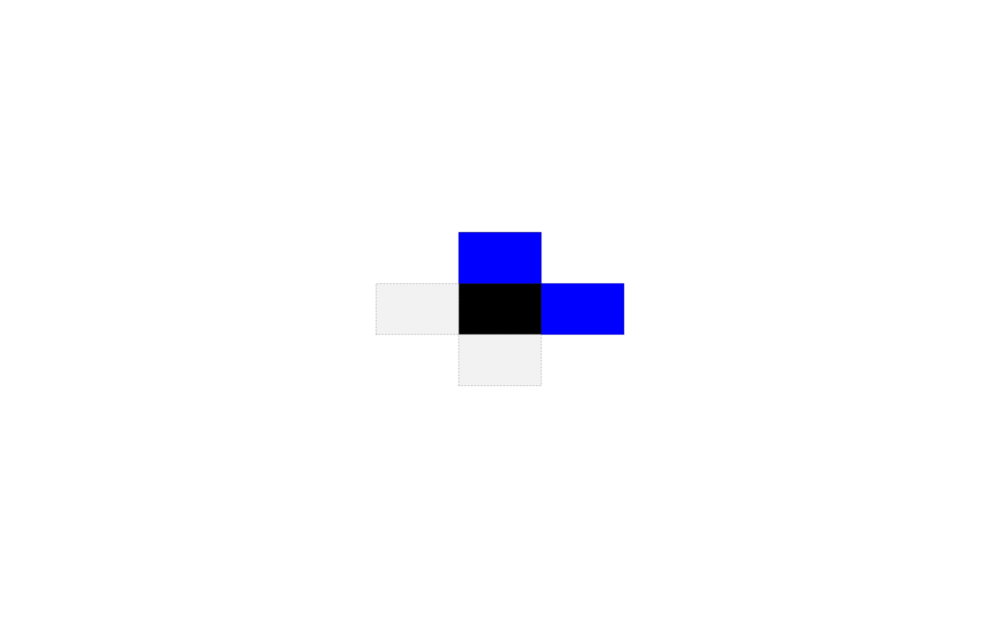

Plotting of mrfi objects.
plot.mrfi.RdPlots a visual representation of the interaction structure
described in a mrfi object. The black tile represents a reference pixel
and gray tiles are shown in relative positions with dependent pixels.
A ggplot object is used, therefore, the user can load the ggplot2
package and add more ggplot layers to freely customize the plot.
# S4 method for mrfi,missing plot(x, no_axis = FALSE)
Arguments
| x | A |
|---|---|
| no_axis |
|
Value
A ggplot object using geom_tile() to represent interacting
relative positions.
Details
The data.frame used for the ggplot call has columns names rx
and ry repŕesenting the relative positions.
Examples
